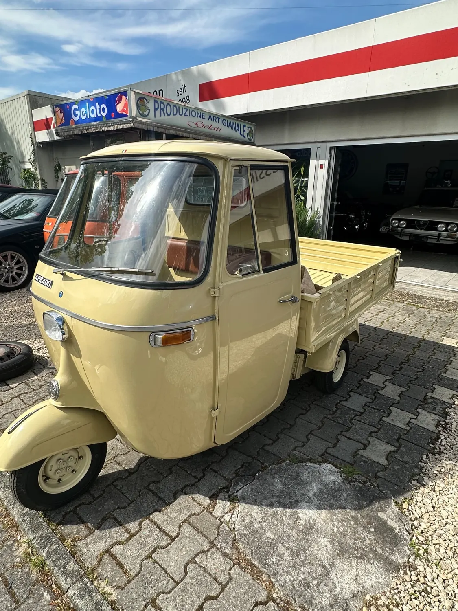
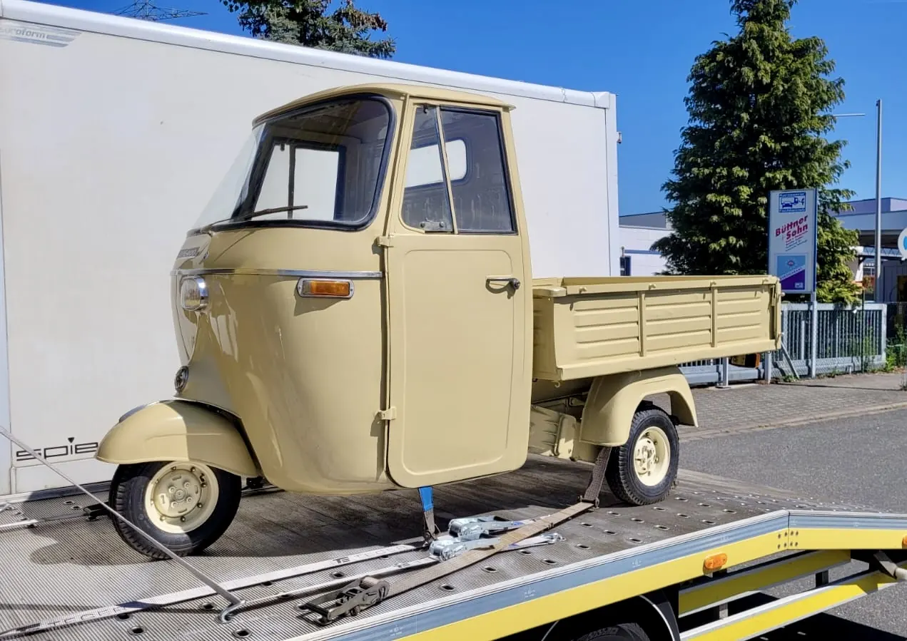
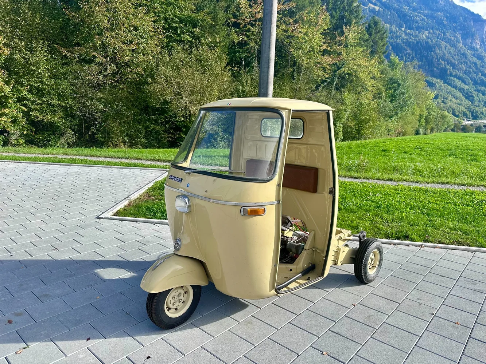

UNSERE APE
Von Sizilien in die Schweiz
Ein italienischer Klassiker auf dem Weg zur mobilen Kaffeebar.
Unsere Piaggio Ape, Baujahr 1974, stammt aus Sizilien. Heute bekommt sie in der Schweiz ein neues Leben. Ihr Umbau zur Kaffee-Ape ist noch im Gang – hier zeigen wir ihren Weg und die Arbeit dahinter.
Italienische Wurzeln
Unsere Piaggio Ape stammt aus Sizilien. Als klassischer Kleintransporter mit Ladefläche war sie ursprünglich für den italienischen Alltag gebaut. Heute beginnt für sie eine neue Geschichte.

Die Reise in die Schweiz
Auf einem Transportfahrzeug reiste die Ape von Italien in die Schweiz. Hier entstand die Idee, ihr ein zweites Leben als mobile Kaffee- und Aperitivo-Bar zu geben.

Der Umbau
Die Ladefläche ist bereits demontiert, und das Fahrgestell liegt frei. Schritt für Schritt wird aus der Ape eine mobile Kaffee- und Aperitivo-Bar. Der Umbau läuft noch – wir zeigen hier den aktuellen Stand.

Du möchtest mehr erfahren oder einen Anlass anfragen?
Anfrage senden